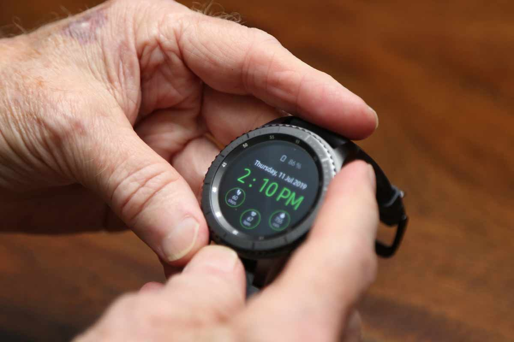

How has technology helped communication? The advancement of technology has made communication unbelievably fast and convenient. It’s incredible to look back and see how much easier communication has gotten over the years.
Communication tools offer one of the most significant examples of how quickly technology has evolved.
In the past, writing a letter, sending faxes, or finding a wired telephone was the best way to communicate remotely with someone. To connect with someone in society today, you have many more efficient options at your fingertips.
You can send them a message on social media, text them, video chat, email, or put a call through.
Social Media
Who hasn’t heard of Facebook, Twitter, or Skype? They’ve become household names. Even if you don’t use these platforms, they’re a part of everyday life and not going away anytime soon.
Regardless of your location, messages via social media get delivered on these platforms at the same rate and speed whether the recipient is right beside you or on the other side of the globe.
You can also send voice messages through these platforms, and it is delivered in nanoseconds.
Messaging Apps
The way we use mobile phones has changed dramatically as well. In addition to social media platforms, there are numerous other applications specifically designed for communication.
If social media isn’t for you, WhatsApp and other messaging apps enable you to quickly message family and friends and even make calls over Wi-Fi.
You can email through your phone or send SMS text messages through your mobile provider, but many smartphones have their own messaging platforms built directly into the phone. On Apple iPhones, iMessage allows you communicate with anyone else who has an iPhone for free using WiFi or cellular data.
iMessage has gotten increasingly sophisticated over the years. Sending photos, videos and emojis are just the basics with what you can do, and the platform has now expanded to include gaming, voice notes, and various app integrations to send information more quickly.
Messaging Apps can be a great option if you have friends in other countries or if you don’t have a phone plan.
The Evolution Of Medical Alert System Technology
Within the last decade, medical emergency response systems have seen some impressive advancements, both in terms of technology and in safety measures that have made seniors feel safer than ever before. One of the earliest and most important advancements has been the introduction of mobile medical alert systems.
These systems allow users the freedom to leave their homes and live their normal lives, while still having the peace of mind that emergency help is available in case of an emergency. Several devices, such as the Medical Guardian Mobile 2.0, allow users to set up a network of emergency contacts who can also view their whereabouts and be notified in case of an emergency.
Recent advancements in medical alert technology also include a built-in fall detection feature. With this feature, special sensors in your medical alert pendant automatically detect when a fall occurs and send an alert to your monitoring call center.
With new GPS and cellular technology, the operator can then determine where you fell, regardless of whether you can communicate your whereabouts or know the address.
This technology allows the operators to then send emergency medical assistance to you more quickly, thus providing a great sense of security for yourself and your loved ones.
Hearing Aids Improve Quality Of Life
The use of hearing aids allows people to maintain a happy, healthy life by reducing the strain caused by reduced hearing ability. According to a study facilitated by the Better Hearing Institute, eight out of 10 hearing aid users report being satisfied with the changes that their hearing aids have made in their lives.
Hearing aids allow users to engage in common daily activities that would otherwise be far more difficult – or even impossible– such as talking, watching TV and listening to music.
Smartwatches
Communication has even evolved beyond mobile devices and personal computers. We can now send messages through tablets, voice assistants, smartwatches, and more.
The smartwatch is a relatively new technology that captures almost all the capabilities of smartphones in a convenient touch-screen watch.
You can receive notifications, track your activity, set alarms, and even call and text directly through these wearable devices.
Smartwatches can also serve as a way to communicate with emergency responders. Medical alert companies like MobileHelp and Medical Guardian have partnered with smartwatch developers or created proprietary technologies to provide seniors the safety of a medical alert right on their wrist.
These watches include many of the same features as a typical smartwatch, such as activity tracking and personal messaging.
Even the makers of popular smartwatches on the market outside of the medical alert industry providing people the ability to communicate quickly in the case of an emergency. The Apple Watch Series 4 and its subsequent versions have built-in fall detection, which will automatically alert emergency assistance.
In addition to its automatic response capabilities, Apple Watch technology also allows users to initiate an emergency call from any location worldwide manually. Apple’s Medical ID Health app can provide emergency responders access to your medical conditions and designated emergency contacts.
Technology allows us to communicate instantly with people in our neighborhoods or around the globe. This innovation not only keeps us connected but can help us live safer and healthier lives.